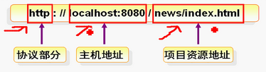

任务：三张表：类别、供应商、产品
 了解JSP
了解JSP 9大内置对象
9大内置对象request,response,
 集合框架
集合框架 mysql，建表，建主外键关系讲解
mysql，建表，建主外键关系讲解 jdbc
jdbc 什么是jsp
什么是jsp web处理jsp的三个阶段：翻译-编译-执行
web处理jsp的三个阶段：翻译-编译-执行B/S结构:
Internet
（浏览器/服务器）程序部署在服务器中，浏览器端与服务器端采用请求(request)/响应(response)模式进行交互
使用URL实现页面访问
URL：
- Uniform Resource Locator"统一资源定位符"，即网址。
- URL是唯一能识别Internet上具体的计算机、目录或文件夹位置的命名约定
- URL的组成
- 第一部分：协议
- 第二部分：主机IP地址（有时包含端口号）
- 第三部分：项目资源的地址，如目录和文件夹名等

Tomcat服务器


Web应用的目录结构

C/S:客户端/服务器
中心局域网
使用JSP实现动态交互

java代码都是在服务器上执行的
什么是JSP：

通过JSP引擎先编译再执行
Web容器处理JSP文件请求需要经过3个阶段：
*.jsp----翻译----*.java----编译----*.class----执行


JSP页面的元素包括：
静态内容、指令、表达式、小脚本、声明、注释


一般不在jsp页面写方法。


request对象


乱码----以GET方法提交数据时
gbk换成--utf8

接收页面进行设置

response对象

跳转有几种方式？
- 转发，转发又称为服务器跳转，url不会改变，可以通过request对象传送数据，request.getRequestDispatcher("").forward(request,response)
- 重定向，response.sendRedire(path)，这个请求新地址，url会及时改变response.sendRedire(“abc.jsp?id=”+1);
转发和重定向的比较

JDBC：JAVA数据库连接技术

API：应用程序接口
JDBC API :
- DriverManager类
- Connection接口
- Statement接口
- ResultSet接口
DriverManager作用：载用各种不同的JDBC驱动
JDBC驱动作用：负责连接各种不同的数据库


这个连接容易产生安全问题

九大内置对象：request,response, ....................,包括try catch

JSP的九个内置对象及其作用,4种作用域对象是哪些，由小到大说出
1.request 封装用户请求 2
2.response 向用户做出响应
3.page JSP页面本身
4.session 客户和服务器间的会话 3
5.config 包括servlet初始化要用的参数
6.application 于服务器启动时开始运行，用来存放全局变量，在用户间共享 4
7.out向客户端输出
8.pageContext 用于访问page的各种对象 1
9.exception 异常